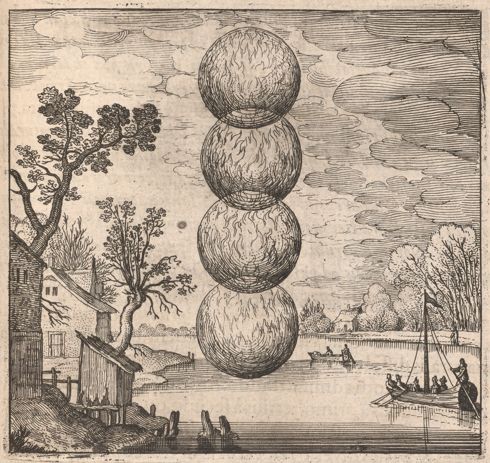

077
Embleme Emblem 17. Of the Secrets of Nature.
Fower Four orbes orbs governe govern this worke work of fire.
Emblema XVII. De Secretis Naturae.
Orbita quadruplex hoc regit ignis opus.
FUGA XVII. in 3. suprà.
Ein vierfältige Feiuer Kugel regiret diß Werck.

Epigramme Epigram 17.
Consult with Nature, and four orbes orbs acquire,
Excited with a soft internall internal fire:
The first and lowest Vulcan doth does declare,
Hermes the next, the third is Luna's Sphere,
Phœbus Phebus the fourth is thine yours and Natures fire.
By these young Students may to truth aspire.
Epigramma XVII.
Naturæae qui imitaris opus, tibi quattuor orbes
Quæaerendi, interius quos levis ignis agat.
Imus Vulcanum referat, bene monstret at alter
Mercurium, Lunam tertius orbis habet:
Quartus, Apollo, tuus, naturæae auditur & ignis
Ducat in arte manus illa catena tuas.
XVII. Epigrammatis Latini versio Germanica.
Die du der Natur Werck gedenekest wol zuermessen/
Must vier SphęrenSphaeren voll Feiur zusuchen nich vergessen /
Die unter deß Vulcani ist / die ander Mercurium zeigt /
Die dritt hat den Mohn / in die obern di Sonne steigt /
Welche ist das Feiur der Natur / laß dir gäylich besohten senn
Diß Kette / daß sie mög leitn in der Kunst die Hände dein.
078
The Philosophers have in many places made mention of four sorts of firee03-01
necessary to the naturall natural worke work, namely Lully, the Author of Scala, Ripley,
and many others: and to this end Raymund speaking of fires (Sayth Says Scala).
You must note, that here are contrary operations: because as the fire
against nature dissolves the Spirit of a fixed body into the water of a
cloud, and binds the body of a volatile spirit into a congealed earth, soe so
contrarywise contrariwise the fire of nature congeales congeals the dissolved spirit of a fixed
body into a globous earth, and resolves the fixed body of a volatile
Spirit by fire against nature, not into the water of a cloud, but into Phi=
losophicall Philosophical water. Ripley speaks more clearly of these fires in gate 3. thus:
There are four sorts of fires, which you ought to know, the naturall natural, unna=
turall unnatural, fire against nature, and elementall elemental, which kindleth kindles wood: These
fires wee we use, and noe no more. Fire against nature ought to excruciate
bodyes bodies, that is the dragon, as I tell you, violently burning, as the fire of hell.
The fire of nature is the third menstruum, that fire is naturally in every
thing: Occasioned fire wee we call unnaturall unnatural, as the heat of ashes and baths
to putrefy: Without these fires you can bring nothing to putrefaction, where=
by your matter may be separated, that it may at once be proportioned
for a new conjunction: Make therefore a fire within in your glasse glass, which
can burne burn bodyes bodies more effectually, than elementall elemental fire: these are their
sayings. They are indeed called fires, because they have a fiery virtue,
the naturall natural in coagulating, the unnaturall unnatural in dissolving, the fire against
nature in corrupting, the elementall elemental in administring administering the first heat and
motion: And there is a concatenated order observed in them, that the Se=
cond may be incited by the first, the third by the second, the fourth by
the third and first together to action, soe so as that one is the agent, and
the other the patient, and the same both agent and patient in different
respect: That which is observed in iron rings or pillars held together by a
Magnet, and joyned joined by mutuall mutual contact, the same in these fires: for the
elementall elemental doth does like the Magnet immit emit its virtue though the second
and third even to the fourth, and joynes joins one to another by mutuall mutual
operations, and causeth causes them to sticke stick together, till internall internal action be
effected amongst the uppermost: The first is elementall elemental fire indeed
and name, the second is aire air or airy, the third watry watery or of a Lunar na=
ture, the fourth earthy: It is needlesse needless to say any thing of the first,
because it is knowne known to every mans eye and touch: The three other are
dragons, menstrua's, waters, Sulphurs, and Mercuryes Mercuries: Dragons, because
being participants of venenosity, they devoure devour
Discourse 17.
The Philosophers have in many places made mention of four sorts of firee03-01
necessary to the naturall natural worke work, namely Lully, the Author of Scala, Ripley,
and many others: and to this end Raymund speaking of fires (Sayth Says Scala).
You must note, that here are contrary operations: because as the fire
against nature dissolves the Spirit of a fixed body into the water of a
cloud, and binds the body of a volatile spirit into a congealed earth, soe so
contrarywise contrariwise the fire of nature congeales congeals the dissolved spirit of a fixed
body into a globous earth, and resolves the fixed body of a volatile
Spirit by fire against nature, not into the water of a cloud, but into Phi=
losophicall Philosophical water. Ripley speaks more clearly of these fires in gate 3. thus:
There are four sorts of fires, which you ought to know, the naturall natural, unna=
turall unnatural, fire against nature, and elementall elemental, which kindleth kindles wood: These
fires wee we use, and noe no more. Fire against nature ought to excruciate
bodyes bodies, that is the dragon, as I tell you, violently burning, as the fire of hell.
The fire of nature is the third menstruum, that fire is naturally in every
thing: Occasioned fire wee we call unnaturall unnatural, as the heat of ashes and baths
to putrefy: Without these fires you can bring nothing to putrefaction, where=
by your matter may be separated, that it may at once be proportioned
for a new conjunction: Make therefore a fire within in your glasse glass, which
can burne burn bodyes bodies more effectually, than elementall elemental fire: these are their
sayings. They are indeed called fires, because they have a fiery virtue,
the naturall natural in coagulating, the unnaturall unnatural in dissolving, the fire against
nature in corrupting, the elementall elemental in administring administering the first heat and
motion: And there is a concatenated order observed in them, that the Se=
cond may be incited by the first, the third by the second, the fourth by
the third and first together to action, soe so as that one is the agent, and
the other the patient, and the same both agent and patient in different
respect: That which is observed in iron rings or pillars held together by a
Magnet, and joyned joined by mutuall mutual contact, the same in these fires: for the
elementall elemental doth does like the Magnet immit emit its virtue though the second
and third even to the fourth, and joynes joins one to another by mutuall mutual
operations, and causeth causes them to sticke stick together, till internall internal action be
effected amongst the uppermost: The first is elementall elemental fire indeed
and name, the second is aire air or airy, the third watry watery or of a Lunar na=
ture, the fourth earthy: It is needlesse needless to say any thing of the first,
because it is knowne known to every mans eye and touch: The three other are
dragons, menstrua's, waters, Sulphurs, and Mercuryes Mercuries: Dragons, because
being participants of venenosity, they devoure devour
079serpents of their owne own
kind, frett and alter, that is, dissolve and coagulate bodyes bodies incorporated
and mixed with them: They are called Menstrua's, because the Philoso=
phicall Philosophical infant is produced from them, and nourished therewith even to
its nativity: Lully in his booke book of the Quintessence, dist. 3. hath has two 58Discourse 17.
Menstruums, the vegetable, and minerall mineral, Ripley in his Præface Preface of the gates hath has
three, which are really one and doe do agree: for the generation of the infant
is made of them alltogether altogether, and a white water præceeds preceeds the birth of it, which
is not of the substance but superfluity of the infant, and therefore to be
separated: They are waters, because in fire they Shew Show a watry watery nature, that
is, flowing and liquidity, which agrees with water: Manifest it is that the
propertyes properties of waters are different and wonderfull wonderful, whereof some doe do petrefy petrify, be=
ing coagulated into very hard stones fitt fit for building: Very like these are the
Philosophers minerall mineral waters, which doe do condense, and turne turn into a stony con=
sistence: They are allso also called Sulphurs because of the virtue of Sulphur,
which they comprehend in them, for the Sulphur of nature is mixed and
made one with the other Sulphur, and the two Sulphurs are dissolved by one,
and one is separated from two, and the Sulphurs are præserved preserved and contained
by Sulphurs, as Yximidius in Turba sayth says: Now what Sulphurs are Dardaris
there declares in these words: Sulphurs are Souls hidden in the fower four elements,
which being extracted by art doe do naturally containe contain one another and are
joyned joined together: if you can by water governe govern and purify well that which
is hidden in the belly of Sulphur, that hidden thing meeting with its owne own
nature rejoyceth rejoices, even as water with its like. I will now tell you (Sayth Says Mosius
allso also) what it is: the first indeed in deed, which is fiery Argent vive, the second, the
body compounded in it, and the third is the water of Sulphur, by which the
first is washd washed, and dilacerated, and governed, till the worke work be accomplished:
That which is sayd said of Sulphurs, the same may be understood of soe so
many Mercuryes Mercuries: For this sayth says the same Mosius afterwards: Argent vive
Cambar is the Magnesia, but Argent vive or Auripigment is that Sulphur
which ascends from a mixd mixed compound: But I will omitt omit the inference of
more testimonyes testimonies, they being infinite and obvious to every man: These foure four
fires are included as it were in Spheres and orbes orbs, that is, every one hath has a
particular center, from which or to which their motion tends, but neverthelesse nevertheless
they are kept soe so bound together partly by nature, partly by art, that one
can operate little or nothing without another, yea the action of one is the
passion of another, and on the contrary . . . . . . .
kind, frett and alter, that is, dissolve and coagulate bodyes bodies incorporated
and mixed with them: They are called Menstrua's, because the Philoso=
phicall Philosophical infant is produced from them, and nourished therewith even to
its nativity: Lully in his booke book of the Quintessence, dist. 3. hath has two 58Discourse 17.
Menstruums, the vegetable, and minerall mineral, Ripley in his Præface Preface of the gates hath has
three, which are really one and doe do agree: for the generation of the infant
is made of them alltogether altogether, and a white water præceeds preceeds the birth of it, which
is not of the substance but superfluity of the infant, and therefore to be
separated: They are waters, because in fire they Shew Show a watry watery nature, that
is, flowing and liquidity, which agrees with water: Manifest it is that the
propertyes properties of waters are different and wonderfull wonderful, whereof some doe do petrefy petrify, be=
ing coagulated into very hard stones fitt fit for building: Very like these are the
Philosophers minerall mineral waters, which doe do condense, and turne turn into a stony con=
sistence: They are allso also called Sulphurs because of the virtue of Sulphur,
which they comprehend in them, for the Sulphur of nature is mixed and
made one with the other Sulphur, and the two Sulphurs are dissolved by one,
and one is separated from two, and the Sulphurs are præserved preserved and contained
by Sulphurs, as Yximidius in Turba sayth says: Now what Sulphurs are Dardaris
there declares in these words: Sulphurs are Souls hidden in the fower four elements,
which being extracted by art doe do naturally containe contain one another and are
joyned joined together: if you can by water governe govern and purify well that which
is hidden in the belly of Sulphur, that hidden thing meeting with its owne own
nature rejoyceth rejoices, even as water with its like. I will now tell you (Sayth Says Mosius
allso also) what it is: the first indeed in deed, which is fiery Argent vive, the second, the
body compounded in it, and the third is the water of Sulphur, by which the
first is washd washed, and dilacerated, and governed, till the worke work be accomplished:
That which is sayd said of Sulphurs, the same may be understood of soe so
many Mercuryes Mercuries: For this sayth says the same Mosius afterwards: Argent vive
Cambar is the Magnesia, but Argent vive or Auripigment is that Sulphur
which ascends from a mixd mixed compound: But I will omitt omit the inference of
more testimonyes testimonies, they being infinite and obvious to every man: These foure four
fires are included as it were in Spheres and orbes orbs, that is, every one hath has a
particular center, from which or to which their motion tends, but neverthelesse nevertheless
they are kept soe so bound together partly by nature, partly by art, that one
can operate little or nothing without another, yea the action of one is the
passion of another, and on the contrary . . . . . . .
78
e17-01Philosophi de quatuor ignium generibus ad opus naturale ne-
cessaris multis in locis meminerunt, nempe Lullius, Author Sca-
læae, Riplæaeus, & alii quamplurimi: e17-02Et hinc loquens de ignibus, (Scala
inquit) Raymundus: Notandum est quod hic jacent contrariæae operationes:
Quia sicut ignis contra naturam dissolvit spiritum corporis fixi in aquam
nubis, & corpus spiritus volatilis constringit in terram congelatam, ita con-
trario ignis naturæae congelat spiritum dissolutum corporis fixi in terram glo-
bosam, & corpus spiritus volatilis fixum per ignem contra naturãnaturam resolvit nõnon
in aquãaquam nubis, sed in aquãaquam PhilosPhilosophicam. e17-03Riplæaeus clariùs de hisce ignib.ignibus Porta 3. sic
loɋturloquitur: e17-04Quatuor sunt ignium genera, quæae scire debes, naturalis, innaturalis,
& contra naturãnaturam, elemẽtalisɋ́elementalisque, qui accẽditaccendit lignũlignum: His ignib.ignibus utimur, & nõnon plu-
ribplu-
ribus. Ignis contra naturãnaturam debet excruciare corpora, ipse est draco, quẽadmodũquemadmodum
tibi dico, violenter comburens, ut ignis inferni. e17-05Ignis naturæae est tertium mẽ-
struummen-
struum, ille ignis naturaliter inest cuiꝙcuique rei: Ignem occasionatum vocu[a]mus in-
naturalem, ut calorem cinerum & balneorum ad putrefaciendum: e17-06AbsꝙAbsque his-
gnibus tu nihil perduxeris ad putrefactionem, ut possit separari tua materia,
ut simul sit proportionata ad novam conjunctionem: Fac igitur ignem intùs
in tuo vitro, qui comburat corpora efficaciùs, quàm ignis elementalis: e17-07Hæae illi:
Ignes verò dicuntur, quia virtutẽvirtutem igneãigneam habent, naturalis coagulan-
do, innaturalis dissolvendo, contra naturãnaturam, corrumpẽdocorrumpendo, elemẽtaliselementalis,
calorẽcalorem & primũprimum motũmotum administrando: e17-08Atq;Atque in his catenatus ordo ob-
servatur, ut secũdussecundus à primo, tertius à secũdosecundo, quartus à tertio & pri-
mo simul incitetur ad actionẽactionem, sic ut unus sit agens, & alter patiens, i-
démq;i-
demque agẽsagens & patiẽspatiens diverso respectu: e17-09Quod in annulis seu stylis fer-
reis per magnetẽmagnetem continuatis, & mutuo attractu cõnexisconnexis animadver-
titur, idẽidem in hisce ignibignibus. ElemẽtalisElementalis n.enim instar magnetis, vim suãsuam mittit
per secũdumsecundum & tertiũtertium ad quartũquartum usq;usque, & unum alteri per operationes
mutuas conjungit & cohæaerere facit, donec interna actio inter supe-
riores peracta sit. e17-10Primus est ignis elementalis re & nomine, secũdussecundus
aër est sive aërius, tertius aqueus seu lunaris naturæae, quartus terreus:
e17-11De primo supervacaneũsupervacaneum est, aliquid dicere, quia omni videnti & tã-
gẽtitan-
genti cognitus est: e17-12Tres reliɋreliqui sunt dracones, mẽstruamenstrua, aquæae, sulfura &
Mercurii: e17-13Dracones, quia venenositatis participes, devorent sui ge-
79
neris serpẽtesserpentes, corpora sibi cõmixtacommixta atterãtatterant & alterẽtalterent, hoc est, solvãtsolvant
& coagulẽtcoagulent: e17-14MẽstruaMenstrua dicuntur, quia ex illis fœoetus Philos.Philosophicus producitur
& nutritur, usq;usque ad ejus nativitatẽnativitatem: Lullius in lib.libro de quinta essẽt.essentia dist.disticho
3. duplex habet menstruũmenstruum, vegetabile & minerale; Riplæaeus in pręfa-
tionepraefa-
tione portarũportarum triplex, quæae reverà unũunum sunt & cõveniũtconveniunt: e17-15Ex omnib.omnibus n.enim
illis simul sit generatio fœoetus & aqua alba ejus ortũortu pręceditpraecedit, quæae nõnon
est de substãtiasubstantia fœoetus sed superfluitate, ideõq;ideoque segregãdasegreganda: e17-16AquęAquae sunt,
quia aqueãaqueam naturãnaturam in igne ostẽdãtostendant, hoc est, fluxum & liquiditatẽliquiditatem, quæae
aquæae cõvenitconvenit: e17-17AquarũAquarum esse diversas & mirabiles proprietates cõstatconstat,
quarũquarum aliæae sunt lapidescẽteslapidescentes, dũdum in durissimos tophos ad æaedificia ho-
minũho-
minum peraptos coagulãturcoagulantur: Hisce persimiles sunt aquęaquae Philos.Philosophicae mine-
rales, quæae indurescũtindurescunt, & in lapideam resistentiãresistentiam transeunt: e17-18Sulphura
quoq;quoque appellãturappellantur ob sulphuris virtutẽvirtutem, quãquam in se habẽthabent: Nam sulphur
naturæae cum alio sulphure miscetur & fit unũunum, & duo sulphura ab u-
no solvuntur unumq;unumque à duob.duobus segregatur, et sulphura à sulphurib.sulphuribus
continẽturcontinentur, ut Yximidius in turba inquit: e17-18Quid autem sulphura sint
ibidem Dardaris declarat in his verbis: Sunt autem sulphura animæae
occultæae in quatuor elementis, quæae per artem extractæae se invicem
continent naturaliter & conjunguntur: si autem occultum, quod
est in ventre sulphuris, aqua regatis & bene mundetis, occultum ob-
vians suæae naturæae læaetatur, similiter aqua pari suo. e17-19Mosius quoq;quoque dicãdicam,
inquit, vobis jam quid sit: Unum quidem, quod est argentum vivum igneũigneum,
duo, corpus in eo compositum & tertium est aqua sulphuris, qua abluitur &
teritur ac regitur unum, donec opus peragatur. e17-20Quod de sulphurib.sulphuribus di-
ctum, idem de totidem Mercuriis intelligendum erit: Sic n.enim ille ipse
Mosius in sequentibsequentibus: Argentum vivum Cambar est magnesia, argentum
verò vivum seu auripigmentum est sulphur, quod ascendit de cõpositocomposito misto:
e17-21sed testimonia, cùm sint infinita & cuique obvia, intermittam huc
plura adducere: Hi quatuor ignes quasi sphæaeris & orbibus inclusi
sunt, hoc est, singuli habent singula centra, à quibus vel ad quæae eo-
rum tẽdattendat motio, at nihilominùs ita partim à natura, partim ab arte
colligati observantur, ut unus absque alio nil aut parum operetur,
imò unius actio alterius sit passio, & econtra.
DiscUrsUs. XVII.
e17-01Philosophi de quatuor ignium generibus ad opus naturale ne-
cessaris multis in locis meminerunt, nempe Lullius, Author Sca-
læae, Riplæaeus, & alii quamplurimi: e17-02Et hinc loquens de ignibus, (Scala
inquit) Raymundus: Notandum est quod hic jacent contrariæae operationes:
Quia sicut ignis contra naturam dissolvit spiritum corporis fixi in aquam
nubis, & corpus spiritus volatilis constringit in terram congelatam, ita con-
trario ignis naturæae congelat spiritum dissolutum corporis fixi in terram glo-
bosam, & corpus spiritus volatilis fixum per ignem contra naturãnaturam resolvit nõnon
in aquãaquam nubis, sed in aquãaquam PhilosPhilosophicam. e17-03Riplæaeus clariùs de hisce ignib.ignibus Porta 3. sic
loɋturloquitur: e17-04Quatuor sunt ignium genera, quæae scire debes, naturalis, innaturalis,
& contra naturãnaturam, elemẽtalisɋ́elementalisque, qui accẽditaccendit lignũlignum: His ignib.ignibus utimur, & nõnon plu-
ribplu-
ribus. Ignis contra naturãnaturam debet excruciare corpora, ipse est draco, quẽadmodũquemadmodum
tibi dico, violenter comburens, ut ignis inferni. e17-05Ignis naturæae est tertium mẽ-
struummen-
struum, ille ignis naturaliter inest cuiꝙcuique rei: Ignem occasionatum vocu[a]mus in-
naturalem, ut calorem cinerum & balneorum ad putrefaciendum: e17-06AbsꝙAbsque his-
gnibus tu nihil perduxeris ad putrefactionem, ut possit separari tua materia,
ut simul sit proportionata ad novam conjunctionem: Fac igitur ignem intùs
in tuo vitro, qui comburat corpora efficaciùs, quàm ignis elementalis: e17-07Hæae illi:
Ignes verò dicuntur, quia virtutẽvirtutem igneãigneam habent, naturalis coagulan-
do, innaturalis dissolvendo, contra naturãnaturam, corrumpẽdocorrumpendo, elemẽtaliselementalis,
calorẽcalorem & primũprimum motũmotum administrando: e17-08Atq;Atque in his catenatus ordo ob-
servatur, ut secũdussecundus à primo, tertius à secũdosecundo, quartus à tertio & pri-
mo simul incitetur ad actionẽactionem, sic ut unus sit agens, & alter patiens, i-
démq;i-
demque agẽsagens & patiẽspatiens diverso respectu: e17-09Quod in annulis seu stylis fer-
reis per magnetẽmagnetem continuatis, & mutuo attractu cõnexisconnexis animadver-
titur, idẽidem in hisce ignibignibus. ElemẽtalisElementalis n.enim instar magnetis, vim suãsuam mittit
per secũdumsecundum & tertiũtertium ad quartũquartum usq;usque, & unum alteri per operationes
mutuas conjungit & cohæaerere facit, donec interna actio inter supe-
riores peracta sit. e17-10Primus est ignis elementalis re & nomine, secũdussecundus
aër est sive aërius, tertius aqueus seu lunaris naturæae, quartus terreus:
e17-11De primo supervacaneũsupervacaneum est, aliquid dicere, quia omni videnti & tã-
gẽtitan-
genti cognitus est: e17-12Tres reliɋreliqui sunt dracones, mẽstruamenstrua, aquæae, sulfura &
Mercurii: e17-13Dracones, quia venenositatis participes, devorent sui ge-
DiscUrsUs. XVII.
neris serpẽtesserpentes, corpora sibi cõmixtacommixta atterãtatterant & alterẽtalterent, hoc est, solvãtsolvant
& coagulẽtcoagulent: e17-14MẽstruaMenstrua dicuntur, quia ex illis fœoetus Philos.Philosophicus producitur
& nutritur, usq;usque ad ejus nativitatẽnativitatem: Lullius in lib.libro de quinta essẽt.essentia dist.disticho
3. duplex habet menstruũmenstruum, vegetabile & minerale; Riplæaeus in pręfa-
tionepraefa-
tione portarũportarum triplex, quæae reverà unũunum sunt & cõveniũtconveniunt: e17-15Ex omnib.omnibus n.enim
illis simul sit generatio fœoetus & aqua alba ejus ortũortu pręceditpraecedit, quæae nõnon
est de substãtiasubstantia fœoetus sed superfluitate, ideõq;ideoque segregãdasegreganda: e17-16AquęAquae sunt,
quia aqueãaqueam naturãnaturam in igne ostẽdãtostendant, hoc est, fluxum & liquiditatẽliquiditatem, quæae
aquæae cõvenitconvenit: e17-17AquarũAquarum esse diversas & mirabiles proprietates cõstatconstat,
quarũquarum aliæae sunt lapidescẽteslapidescentes, dũdum in durissimos tophos ad æaedificia ho-
minũho-
minum peraptos coagulãturcoagulantur: Hisce persimiles sunt aquęaquae Philos.Philosophicae mine-
rales, quæae indurescũtindurescunt, & in lapideam resistentiãresistentiam transeunt: e17-18Sulphura
quoq;quoque appellãturappellantur ob sulphuris virtutẽvirtutem, quãquam in se habẽthabent: Nam sulphur
naturæae cum alio sulphure miscetur & fit unũunum, & duo sulphura ab u-
no solvuntur unumq;unumque à duob.duobus segregatur, et sulphura à sulphurib.sulphuribus
continẽturcontinentur, ut Yximidius in turba inquit: e17-18Quid autem sulphura sint
ibidem Dardaris declarat in his verbis: Sunt autem sulphura animæae
occultæae in quatuor elementis, quæae per artem extractæae se invicem
continent naturaliter & conjunguntur: si autem occultum, quod
est in ventre sulphuris, aqua regatis & bene mundetis, occultum ob-
vians suæae naturæae læaetatur, similiter aqua pari suo. e17-19Mosius quoq;quoque dicãdicam,
inquit, vobis jam quid sit: Unum quidem, quod est argentum vivum igneũigneum,
duo, corpus in eo compositum & tertium est aqua sulphuris, qua abluitur &
teritur ac regitur unum, donec opus peragatur. e17-20Quod de sulphurib.sulphuribus di-
ctum, idem de totidem Mercuriis intelligendum erit: Sic n.enim ille ipse
Mosius in sequentibsequentibus: Argentum vivum Cambar est magnesia, argentum
verò vivum seu auripigmentum est sulphur, quod ascendit de cõpositocomposito misto:
e17-21sed testimonia, cùm sint infinita & cuique obvia, intermittam huc
plura adducere: Hi quatuor ignes quasi sphæaeris & orbibus inclusi
sunt, hoc est, singuli habent singula centra, à quibus vel ad quæae eo-
rum tẽdattendat motio, at nihilominùs ita partim à natura, partim ab arte
colligati observantur, ut unus absque alio nil aut parum operetur,
imò unius actio alterius sit passio, & econtra.